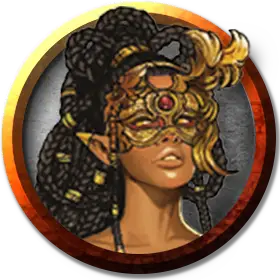

Самира Эра
Samira Arah
Средний Гуманоид (Эльфийка), нейтральный, именной НИП

Класс Доспеха 12
Хиты 27 (6к8)
Скорость 30 футов
| мод | спас | ||
|---|---|---|---|
| СИЛ | 10 | +0 | +0 |
| ЛОВ | 15 | +2 | +2 |
| ТЕЛ | 10 | +0 | +0 |
| мод | спас | ||
|---|---|---|---|
| ИНТ | 12 | +1 | +1 |
| МДР | 14 | +2 | +2 |
| ХАР | 16 | +3 | +3 |
Навыки Восприятие +6, Ловкость рук +4, Обман +5, Проницательность +4, Расследование +5, Скрытность +4, Убеждение +5
Чувства тёмное зрение 60 футов, пассивное Восприятие 16
Языки Эльфийский
Опасность 1 (200 опыта)
Бонус мастерства +2
Особенности
Языки. Самира знает Эльфийский и 2 языка на выбор.
Хитрое действие. В каждый свой ход Самира может бонусным действием выполнить действие «Рывок», «Отход» или «Засада».
Наследие фей. Самира совершает с преимуществом спасброски от очарования, и магия не может её усыпить.
Скрытая атака (1 / ход). Самира наносит дополнительный урон 7 (2к6), когда он поражает цель атакой оружием и имеет преимущество в броске атаки, или когда цель находится в пределах 5 футов от союзника Самиры, который не выведен из строя, и Самира не имеет помехи на бросок атаки.
Действия
Мультиатака. Самира совершает две рукопашные атаки.
Короткий меч. Рукопашная атака оружием: +4 к попаданию, досягаемость 5 фт., Одна цель. Попадание: 5 (1к6 + 2) колющего урон.
Ручной арбалет. Дальнобойная атака оружием: +4 к попаданию, досягаемость 30/120 фт., Одна цель. Попадание: 5 (1к6 + 2) колющего урон.